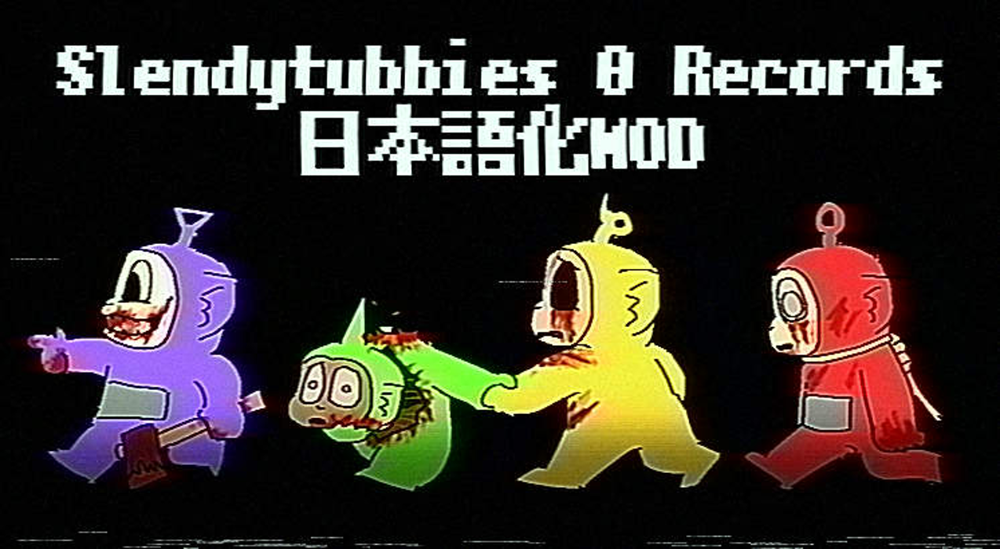

本MODはHostGame Studio氏によって作成された Slendytubbies 0 Records の非公式日本語MODパッチとなります。
・本MODは有志によって作られたものです。意訳などが含まれていますので、理解したうえで導入してください。
・無断で再配布はしないでください。
・誤字脱字、バグは可能な範囲で修正していますがもしありましたら私のTwitterのDMにて報告をお願いします。
・このMODを使用して動画撮影はOKですが、このMODを使用したということを明記してください。
・このMODを使用したことによってトラブルに関しては、一切の責任を負いません。各自の責任においてご使用ください。
・このMODは公式からの消去要請があった場合には削除されます。
1:まず、本家Slendytubbies0 Recordsを持っていない場合は上記のリンクからダウンロードしてください。
2:翻訳MODパッチのダウンロードをします。(ドライブの中にある最新版をダウンロードしてください。)
3:ZIPを解凍すると、”Slendytubbies 0 Records_Data”というファイルが出てくるので、それをSlendytubbies0 Recordsのファイル直下にドラッグアンドドロップします。
4:置き換えが完了したら、そのままゲームを起動してください。デフォルト言語が日本語になっています。
オリジナルゲーム:HostGame Studio
使用フォント:JFドットM+10 鉄瓶ゴシック VCR OSD W JP
翻訳:Tottu_1280
2026/6/23:
公開しました
軽度な翻訳の修正を行いました。
6/24:
CUI画面の文字が小さすぎる問題を修正しました。